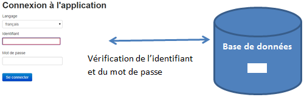
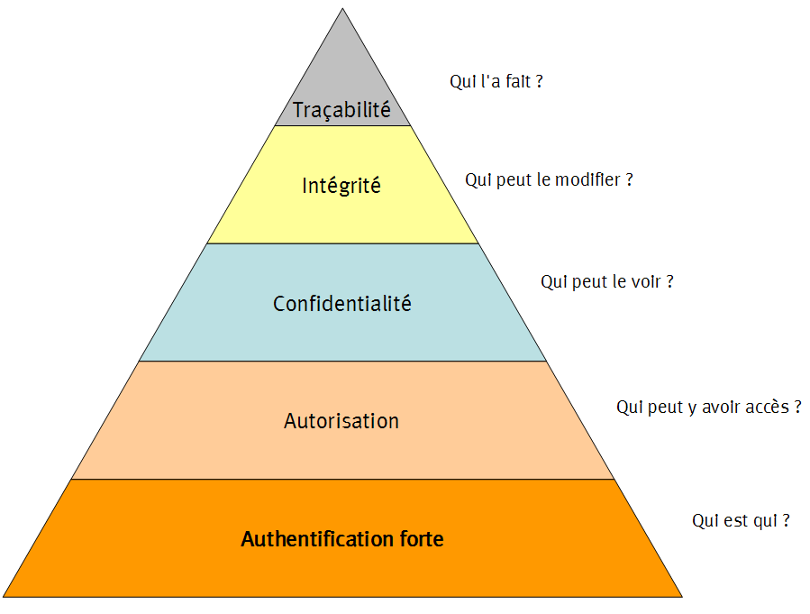

principe

https://fr.wikipedia.org/wiki/Authentification_forte
rêgle de sécurité

Authentifieur
Autorisation
local : LocalStrategy (nodeJs et passport) , exemple flask
utilisateur (id_utilisateur,login, password, role, est_actif, nom, email) INSERT INTO utilisateur(id_utilisateur,login,email,password,role,nom,est_actif) VALUES
(1,'admin','admin@admin.fr',
'sha256$dPL3oH9ug1wjJqva$2b341da75a4257607c841eb0dbbacb76e780f4015f0499bb1a164de2a893fdbf',
'ROLE_admin','admin','1'),
(2,'client','client@client.fr',
'sha256$1GAmexw1DkXqlTKK$31d359e9adeea1154f24491edaa55000ee248f290b49b7420ced542c1bf4cf7d',
'ROLE_client','client','1'),
(3,'client2','client2@client2.fr',
'sha256$MjhdGuDELhI82lKY$2161be4a68a9f236a27781a7f981a531d11fdc50e4112d912a7754de2dfa0422',
'ROLE_client','client2','1');dé-archiver le code (squelette du projet)
présentation de app.py
configurer l’accès à la base de données : connexion_db.py (il est possible d’ajouter ce fichier dans .gitignore)
contrôleur auth_security
SELECT last_insert_id() AS last_insert_id; qui permet de vérifier quelle est la dernière valeur du compteur (identifiant) après une commande INSERTUtiliser le fichier looping suivant
Tester avec différentes jointures
On appellera “entité” une instance d’“une classe d’entité” comme P. Bergougnoux (bref identique à un enregistrement).
Il est possible de trouver une autre interprétation d’une “entité”
X : “exclusivité” ou “exclusion mutuelle” : une entité du sur-type concernée par une entité du sous-type ne peut pas être concernée par une entité d’un autre sous-type
T : “totalité” : toutes les entités du sur-type sont concernées par au moins une entité d’un sous-type, il y a “totalité”